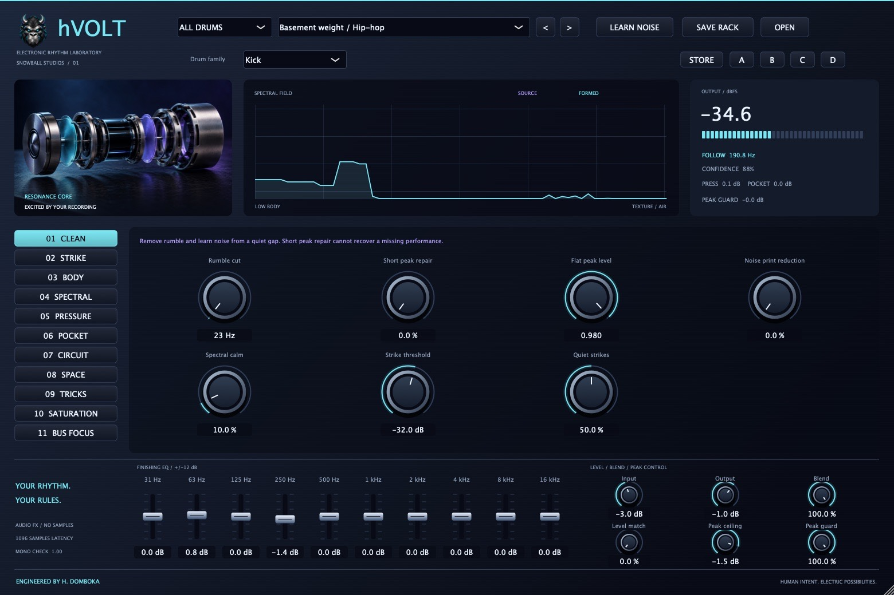

SIMLAF Academy / Lesson 02
Lesson 02 · Low end
Mixing the Amapiano log drum
The log drum is a bassline you hit. How to give it the low end, keep it out of the kick's way, and make every note read from club system to phone.
In Amapiano the log drum does two jobs at once. It is percussion, a hard, woody hit that drives the groove, and it is the bassline, playing notes and often sliding between them. Mix it like a drum and the low end goes thin. Mix it like a bass and the groove goes soft.
The way through is to stop treating it as one sound. A log drum has parts, and each part wants something different.
What the log drum is, in the mix
| Part | Roughly | What it does |
|---|---|---|
| Fundamental | 40–120 Hz | The note itself, felt more than heard |
| Body | 120–400 Hz | Weight and warmth; where it meets pads and keys |
| Knock | 500 Hz–2 kHz | The woody hit, and what a phone actually plays |
| Click | 2–5 kHz | Attack definition; easy to overdo |
Two things make it harder than an ordinary bass. The notes are short and percussive, so the level changes from hit to hit are part of the groove. And many patterns glide, so the fundamental is a moving target: a narrow boost at 55 Hz that flatters one note will make the next one boom.
Before you touch an EQ, play the pattern and listen to every note. If one note jumps out, fix it at the source with velocity, note level or a small clip-gain edit. Then prefer broad moves in the low end, shelves and wide bells rather than narrow peaks.
Step 1: decide who owns the sub
The kick and the log drum both want 40–100 Hz. Decide which one owns it, section by section.
- The log drum owns the sub. This is common in Amapiano. Keep the kick short and punchy, with its weight a little higher, and roll its lowest sub off gently around 40–50 Hz so the log drum's notes have room.
- The kick owns the sub. The log drum's low end steps aside each time the kick lands, and comes straight back after.
Either way, the two should not peak at the same frequency at the same moment. On the kick, hCHOP STICKS can bring the attack forward with its 3-band transient shaping, so the kick cuts through on top of the log drum instead of fighting it underneath.
Step 2: duck the low band, not the whole drum
Classic side-chain compression ducks the entire log drum. Every time the kick hits, the knock disappears as well, and the groove loses its bounce. Duck only the low band.
With a dynamic EQ band. In SIMLAF EQ, put a low shelf or a wide bell where the kick and the log drum overlap, usually 60–120 Hz. Make the band dynamic, set its Detector to Side-chain and feed it the kick. Then:
- Dynamic Range: −3 to −6 dB.
- Attack: fast, 1–5 ms.
- Release: 60–100 ms. At 112 BPM a sixteenth note lasts about 134 ms, so most of the log drum's low end is back before the next sixteenth.
With hVOLT's Pocket. hVOLT has low-frequency side-chain ducking built in, keyed from its own strike detector or from an external side-chain. On the log drum, raise Sidechain pocket (it starts at 0%), set Pocket detector to External sidechain and feed it the kick. Then set Pocket crossover to 100–140 Hz, Pocket depth to 4–8 dB and Pocket release to 60–100 ms.
The test: the kick should feel as if it lands in a pocket, while every note of the log drum stays clear. If the log drum starts to pump, take some depth away.
Step 3: keep the low end in mono
Log drum sounds are often widened with chorus or doubled layers. Width in the sub causes trouble: on a mono system the two sides partly cancel and the notes get quieter. Many club systems run their subs in mono, and a phone in one hand is as good as mono.
In SIMLAF Imager, switch on Mono Bass and start at 100–150 Hz with the 24 dB/oct slope. Then listen to the whole mix in mono: the log drum should get no quieter.
Step 4: saturate for translation
On a phone, the 40–80 Hz fundamental is simply gone. What the listener hears is the knock and the harmonics above the note. Saturation creates those harmonics at two, three and four times the note's frequency, and the ear rebuilds the missing pitch from them.
- In SIMLAF Drive, switch on Two Bands and set the crossover around 200–250 Hz.
- Drive the low band and turn High Drive down to 0 dB (it starts at 9 dB), so the new harmonics come from the notes while the click stays clean.
- Keep Auto Gain on (it is on by default), so you judge the colour and not the extra level.
- Bring the mix down until it just works on a phone. If the low end turns fuzzy on big speakers, you have gone too far.
hVOLT covers this job too, with four saturation circuits and translation harmonics in its low-end section. A later lesson in this series looks more closely at why harmonics carry a bassline on small speakers.

Step 5: leave room for the bassline and the pads
If the track also has a sub bass or a bassline, give each one a lane. One common split: the sub bass sustains below about 60 Hz, while the log drum is high-passed around 45–50 Hz and carries the punch from 60 to 400 Hz. The reverse works too. What does not work is both of them doing everything.
Pads and keys usually carry more low end than they need:
- High-pass them somewhere around 150–250 Hz, by ear.
- Make a broad cut of 2–3 dB in the 200–400 Hz region where the log drum's body sits.
- Or let the log drum push them aside only when it plays: SIMLAF Spectral in Compress mode on the pad bus, with its side-chain key fed from the log drum, dips the pads only at the frequencies where the log drum has energy, and only while it does.
The top of the groove matters too. Bright hats and shakers make a log drum groove tiring long before the low end does, and they can be tamed with little effect on the log drum.
Check it everywhere
- In mono.
- On a phone or laptop speaker at a low level. You should be able to follow every note of the pattern.
- On headphones, for the glides and the clicks.
- On the biggest system you can get to, or in a car, for the sub.
If a note disappears on the phone, it needs more knock or more harmonics. If the sub booms on the big system, look at the glides and the overlap with the kick before you reach for EQ.
NGOMA 2, our drum instrument with a dedicated log-drum engine, is coming in January 2027. The groove in the clip above was played on it.
SIMLAF Audio · SIMLAF Academy · Lesson 02